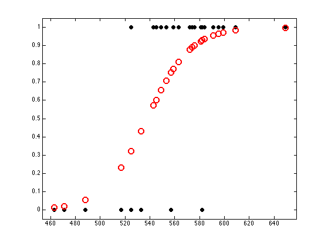

Binary Logistic Regression on SAT data
Example from Johnson and Albert p87
Contents
Load data
% This file is from pmtk3.googlecode.com stat = loadData('sat'); y = stat(:,1); X = stat(:,4);
Fit model
model = logregFit(X, y); [yhat, prob] = logregPredict(model, X);
visualize model fit for each training point
figure; plot(X, y, 'ko', 'linewidth', 2, 'MarkerSize', 7, 'markerfacecolor', 'k'); hold on plot(X, prob, 'ro', 'linewidth', 2,'MarkerSize', 10) axis_pct
Highlight the two x's which have different labels.
plot(525, 0, 'gx', 'linewidth', 2, 'markersize', 14); plot(525, 1, 'gx', 'linewidth', 2, 'markersize', 14); printPmtkFigure('logregSATdemo')